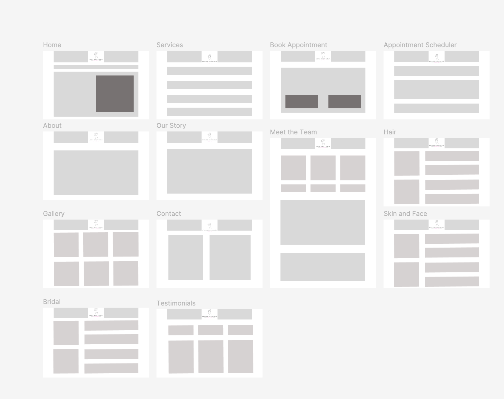

Rabina Beauty Parlor
Turning a word-of-mouth salon and training centre in Kathmandu into an 11-page website that turns visitors into booked appointments.


Design thinking
- 1Empathize
Founded by Sulochana, the salon grew one client at a time. New clients couldn't browse services or prices online.
- 2Define
Two audiences, beauty clients and aspiring students, must understand, trust and act from a first visit on a phone.
- 3Ideate
Lead with warmth, make services and prices scannable, and give both audiences a clear next step.
- 4Prototype
A low-fidelity homepage locked the hierarchy before any colour or photo, then the full 11-page build.
- 5Test
Checked from 375px phones to wide desktop, plus an accessibility and SEO pass.
How do you turn the feeling of being personally cared for into a website?
Goal: make booking or enrolling the obvious next step, on every page.
Site map
- Serviceshair, skin, bridal
- TrainingCTEVT courses
- Book appointment
- Aboutstory, team
- Testimonials
- Contact
- Client
- Services & prices
- Book appointment
- Student
- Training
- Enrol inquiry
Wireframe
Low fidelity first: a centred brand, a high-contrast nav, a one-line promise with two calls to action, and a signature image band.

User interface
A quiet ivory and charcoal system with a single rose accent, taken from the logo, on every call to action.
Clear service cards with honest “starting at” prices, and a dedicated bridal journey.


From wireframe to final
The centred script logo, the dark nav band, “Where Beauty Meets Care” with Book and Explore side by side, and the image band.
Wire the appointment form to real scheduling, and run a usability pass with first-time visitors on the booking flow.
Design system
Colour
- Ivory#F9F7F4
- Charcoal#1C1C1C
- Rose#FD5DA5
- Stone#4A4A4A
Type
Accessibility choices
- Semantic HTML
- One H1 per page
- Skip link
- Visible focus
- Mobile-first
- Alt text and sitemap
Outcome
A front door anyone can walk through: a new client can read the story, scan prices and book in under a minute, and students can finally find the training programmes.